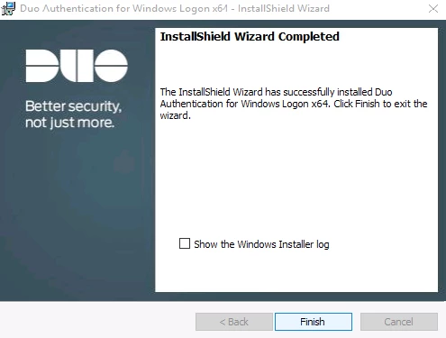

Duo
Stuff about Duo & administration thereof
Cisco AnyConnect VPN
Duo Admin Panel
Go to Applications > Protect an Application > search for cisco radius > Protect this Application
Take note of the below. There are way more options that can be configured including but not limited to, logs, voice greetings, policies, etc.
Duo Authentication Proxy
See :Directory Sync for expected output
# Edit the Duo config file
sudo nano /opt/duoauthproxy/conf/authproxy.cfg
[radius_server_auto]
ikey=REDACTED
skey=REDACTED
api_host=REDACTED.duosecurity.com
client=ad_client
radius_ip_1=x.x.x.x
radius_secret_1=REDACTED
# Restart the proxy service
service duoauthproxy restart
# Verify config
sudo /opt/duoauthproxy/bin/authproxy_connectivity_tool
Cisco ASA Configuration
# Create the aaa-server
aaa-server CORP_DUO protocol radius
aaa-server CORP_DUO (inside) host server.corp.example.com
timeout 60
key ***************
authentication-port 1812
accounting-port 1813
radius-common-pw ***************
no mschapv2-capable
exit
# Config tunnel-group
tunnel-group DUO_TUNNEL_GROUP type remote-access
tunnel-group DUO_TUNNEL_GROUP general-attributes
default-group-policy GROUP_POLICY
authentication-server-group CORP_DUO
address-pool POOL
authorization-required
authorization-server-group CORP_LDAP
tunnel-group DUO_TUNNEL_GROUP webvpn-attributes
group-alias DuoEnabledVPN enable
radius-common-pw is common password to be used for all users who are accessing this RADIUS authorization server through this security appliance
key is key specific to a client (i.e. client is a device) created on the Radius server.
Cisco Management Access
We added independent Application to DUO cloud service to be able to independently manage groups allowed to access the group of devices.
The group is:
DUO Authentication Proxy
We needed a second instance of RADIUS proxy on the duo instances built for AnyConnect MFA.
This was achieved by adding a section to the configuration of each DUO instance.
We needed to specify different radius port, for example port=18120, to avoid mixing with DUO MFA for AnyConnect.
[radius_server_auto2]
ikey=REDACTED
skey=REDACTED
api_host=REDACTED.duosecurity.com
client=ad_client
port=18120
radius_ip_1=x.x.x.x
radius_secret_1=REDACTED
radius_ip_2=y.y.y.y
radius_secret_2=REDACTED
radius_ip_3=z.z.z.z
radius_secret_3=REDACTED
Reload of the service should show no errors:
Cisco ASA
The configuration on each firewall has to point on the local duo proxy servers first, then as a fallback should be listed the remote proxy servers.
aaa-server CORP_DUO_NET protocol radius
aaa-server CORP_DUO_NET (inside) host server1.corp.example.com
timeout 60
key REDACTED
authentication-port 18120
accounting-port 1813
radius-common-pw REDACTED
no mschapv2-capable
aaa-server CORP_DUO_NET (inside) host server2.corp.example.com
timeout 60
key REDACTED
authentication-port 18120
accounting-port 1813
radius-common-pw REDACTED
no mschapv2-capable
no aaa authentication ssh console LOCAL
aaa authentication ssh console CORP_DUO_NET LOCAL
Cisco IOS
The configuration on each switch has to point on the local duo proxy servers first, then as a fallback should be listed the remote proxy servers. Also DNS had to be fixed to make sure the switch can find the instances by name.
Importantly, the Duoauthproxy DNS to IP resolution is only performed at the configuration time and saved, as each Duoauthproxy is saved to the configuration as an IP address.
# Enable DNS lookups
ip domain-lookup
ip domain-name corp.example.com
ip name-server x.x.x.x
ip name-server y.y.y.y
ip name-server 1.1.1.1
ip name-server 1.0.0.1
aaa group server radius CORP_DUO_NET
server-private server1.corp.example.com auth-port 18120 timeout 60 key REDACTED
server-private server2.corp.example.com auth-port 18120 timeout 60 key REDACTED
# Test
test aaa group CORP_DUO_NET USER PASSWORD new-code
no aaa authentication login default local
aaa authentication login default group CORP_DUO_NET local
aaa authorization exec default group CORP_DUO_NET local if-authenticated
#change enable secret to let rancid elevate privileges via enable
enable secret 5 REDACTED
Logging & Syslog
DuoAuthProxy Syslog Config
nano /etc/rsyslog.conf
*.* @server1.corp.example.com:12202;RSYSLOG_SyslogProtocol23Format
*.* @server2.corp.example.com:12202;RSYSLOG_SyslogProtocol23Format
*.* @server3.corp.example.com:12202;RSYSLOG_SyslogProtocol23Format
service rsyslog restart
Logging Server Config
I’m using Graylog in this example
Navigate to System > Inputs
Select Syslog UDP
Select the Node, type in the Title and Port
Viewing the Messages
Directory Sync
Add Email Addresses Attributes to AD
The E-mail address field in AD needs to be filled out so that, when we do a Directory Sync with Duo, the email address will be populated in Duo for sending out enrolment links.
Import-Module ActiveDirectory
$OUList =
'ExampleOU1
ExampleOU2
ExampleOU3'
$OUList = $OUList -split '\r?\n'
ForEach ($OU in $OUList)
{
Get-ADUser -Filter * -SearchBase "OU=\$OU,DC=corp,DC=domain,DC=com" | `
ForEach-Object { Set-ADUser -EmailAddress ($_.samaccountname + '@domain.com') -Identity $_ }
ForEach-Object { Get-ADUser -Filter * -SearchBase "OU=\$OU,DC=mydc,DC=com" -Properties * | select SamAccountName, mail } | Tee-Object -Append UpdateEmailAddressAttributes.log
}

In the Duo Admin Panel
https://duo.com/docs/adsync#add-the-directory
Go to Users > Directory Sync > New Directory
Input the Display name, Server name (use the internal hostname, as the Duo Authentication Proxy is the device that connects to AD), and select Plain Authentication type
The Transport type is the connection between the Duo Authentication Proxy and AD. For the purpose of this guide, we are using CLEAR Transport type, but otherwise, we will configure LDAPS. When implementing, I recommend we add phones to AD and check Import phones, as this will make enrollment easier.
Take note of the Integrated key, Secret key, and API hostname
We will now take a break from the Duo Admin Panel and configure the Duo Authentication Proxy and come back to this page. Ensure that you click on Save Directory
On the Duo Authentication Proxy
As per https://duo.com/docs/adsync#duo-authentication-proxy and https://duo.com/docs/authproxy-reference
# Update and upgrade
sudo apt-get update -y && sudo apt-get upgrade -y
# Installing dependancies
sudo apt-get install build-essential python-dev libffi-dev perl zlib1g-dev -y
# Download the Duo "auth proxy"
sudo wget https://dl.duosecurity.com/duoauthproxy-latest-src.tgz
# Extract the program & build
sudo tar zxf duoauthproxy-latest-src.tgz
dir=$(ll | grep src/ | awk '{print $9}')
cd $dir
sudo make
# Install the program
cd duoauthproxy-build/
sudo ./install
# enter, enter, yes
Configuration - Cloud Section
As per https://duo.com/docs/authproxy-reference#cloud-section
# Edit the Duo config file
sudo nano /opt/duoauthproxy/conf/authproxy.cfg
[cloud]
ikey=REDACTED
skey=REDACTED
api_host=REDACTED.duosecurity.com
service_account_username=REDACTED
service_account_password=REDACTED
Configuration - Client Section
As per https://duo.com/docs/authproxy-reference#client-sections
# Edit the Duo config file
sudo nano /opt/duoauthproxy/conf/authproxy.cfg
[ad_client]
host=x.x.x.x
host_2=y.y.y.y
service_account_username=REDACTED
service_account_password=REDACTED
search_dn=DC=example,DC=com
# Restart the proxy service
service duoauthproxy restart
Verification
As per https://duo.com/docs/authproxy-reference#using-the-connectivity-tool
Note that the expected output below also contains the testing done for radius_server_auto, which is for Cisco RADIUS VPN - see :Duo Admin Panel.
/opt/duoauthproxy/bin/authproxy_connectivity_tool
# Expected output
Running The Duo Authentication Proxy Connectivity Tool. This may take several minutes...
[info] Testing section 'cloud' with configuration:
[info] {'api_host': 'REDACTED.duosecurity.com',
'ikey': 'REDACTED',
'service_account_password': '*****',
'service_account_username': 'REDACTED',
'skey': '*****[40]'}
[info] There are no configuration problems
[info] -----------------------------
[info] Testing section 'ad_client' with configuration:
[info] {'host': 'x.x.x.x',
'search_dn': 'DC=example,DC=com',
'service_account_password': '*****',
'service_account_username': 'REDACTED'}
[info] There are no configuration problems
[info] -----------------------------
[info] Testing section 'radius_server_auto' with configuration:
[info] {'api_host': 'REDACTED.duosecurity.com',
'client': 'ad_client',
'ikey': 'REDACTED',
'radius_ip_1': 'x.x.x.x',
'radius_secret_1': '*****',
'skey': '*****[40]'}
[info] There are no configuration problems
[info] -----------------------------
[info] Testing section 'cloud' with configuration:
[info] {'api_host': 'REDACTED.duosecurity.com',
'ikey': 'REDACTED',
'service_account_password': '*****',
'service_account_username': 'REDACTED',
'skey': '*****[40]'}
[info] The Cloud connection has no connectivity problems.
[info] -----------------------------
[info] Testing section 'ad_client' with configuration:
[info] {'host': 'x.x.x.x',
'search_dn': 'DC=example,DC=dev',
'service_account_password': '*****',
'service_account_username': 'REDACTED'}
[info] The LDAP Client section has no connectivity issues.
[info] -----------------------------
[info] Testing section 'radius_server_auto' with configuration:
[info] {'api_host': 'REDACTED.duosecurity.com',
'client': 'ad_client',
'ikey': 'REDACTED',
'radius_ip_1': 'x.x.x.x',
'radius_secret_1': '*****',
'skey': '*****[40]'}
[info] The RADIUS Server has no connectivity problems.
[info] -----------------------------
[info] SUMMARY
[info] No issues detected
The results have also been logged in /opt/duoauthproxy/log/connectivity_tool.log
Back on the Duo Admin Panel
Click on Save Directory again. Select the groups that you would like to sync. For this demo I just selected Role-Infrastructure. Click on Save Groups.
You can now sync the users that are part of the AD group, or sync specific users in the group(s).
Unix SSH
Installation & Configuration
I recommend the duo-unix apt package gets installed via the official Duo repository, instead of building and installing the package from a download link. Therefore, as per https://duo.com/docs/duounix#linux-distribution-packages:
# Create the source.list
sudo nano /etc/apt/sources.list.d/duosecurity.list
deb http://pkg.duosecurity.com/Ubuntu bionic main
# Install duo-unix
sudo curl -s https://duo.com/APT-GPG-KEY-DUO | sudo apt-key add -
sudo apt-get update -y && sudo apt-get install duo-unix -y
Configure the DuoPAMModule, then choose ONLY ONE of the following:
Public Key or SSSD Authentication- select this option if you are using SSSD for logins to the host with the ubuntu/public key as the backdoor, in case SSSD fails.
:Public Key Authentication - select this option if you are using ubuntu/public key as the only method to login to the host.
Password Authentication - select this option if you are using a local user account as the only method to login to the host.
Duo PAM Module
Duo PAM is the first thing that has to be configured. We specify the Duo API hostname, etc. in this configuration.
nano /etc/duo/pam_duo.conf
[duo]
; Duo integration key
ikey = REDACTED
; Duo secret key
skey = REDACTED
; Duo API host
host = REDACTED.duosecurity.com
; Enable autopush
autopush = yes
; `failmode = safe` In the event of errors with this configuration file or connection to the Duo service
; this mode will allow login without 2FA.
; `failmode = secure` This mode will deny access in the above cases. Misconfigurations with this setting
; enabled may result in you being locked out of your system.
failmode = safe
; Send command for Duo Push authentication
;pushinfo = yes
Public Key or SSSD Authentication
An example of the below configuration, as well as installing & configuring SSSD, joining the domain, and configuring sudoers can be found here.
SSH Config
Add or modify the below parameters to the sshd_config file.
nano /etc/ssh/sshd_config
PubkeyAuthentication yes
PasswordAuthentication yes
AuthenticationMethods publickey password
ChallengeResponseAuthentication yes
UsePam yes
UseDNS no
PAM Config
Modify the /etc/pam.d/sshd PAM module config.
nano /etc/pam.d/sshd
### comment-out @include common-auth
#@include common-auth
### add the below 3 lines underneath #@include common-auth
auth [success=1 default=ignore] /lib64/security/pam_duo.so
auth requisite pam_deny.so
auth required pam_permit.so
Modify the /etc/pam.d/common-auth PAM module config
nano /etc/pam.d/common-auth
### comment-out auth [success=2 default=ignore] pam_unix.so nullok_secure
#auth [success=2 default=ignore] pam_unix.so nullok_secure
### add the below 2 lines underneath #auth [success=1 default=ignore] pam_unix.so nullok_secure
auth requisite pam_unix.so nullok_secure
auth [success=2 default=ignore] /lib64/security/pam_duo.so
Public Key Authentication
SSH Config
Add or modify the below parameters to the sshd_config file.
nano /etc/ssh/sshd_config
PubkeyAuthentication yes
PasswordAuthentication no
AuthenticationMethods publickey,keyboard-interactive
UsePam yes
ChallengeResponseAuthentication yes
UseDNS no
service sshd restart
PAM Config
Modify the /etc/pam.d/sshd PAM module config.
nano /etc/pam.d/sshd
### comment-out @include common-auth
#@include common-auth
### add the below 3 lines underneath #@include common-auth
auth [success=1 default=ignore] /lib64/security/pam_duo.so
auth requisite pam_deny.so
auth required pam_permit.so
Modify the /etc/pam.d/common-auth PAM module config
nano /etc/pam.d/common-auth
### comment-out auth [success=1 default=ignore] pam_unix.so nullok_secure
#auth [success=1 default=ignore] pam_unix.so nullok_secure
### add the below 2 lines underneath #auth [success=1 default=ignore] pam_unix.so nullok_secure
auth requisite pam_unix.so nullok_secure
auth [success=1 default=ignore] /lib64/security/pam_duo.so
Password Authentication
SSH Config
Although the defaults work, add or modify the below parameters to the sshd_config file.
nano /etc/ssh/sshd_config
PubkeyAuthentication no
PasswordAuthentication yes
AuthenticationMethods password
UsePam yes
ChallengeResponseAuthentication yes
UseDNS no
service sshd restart
PAM Config
Although the PAM configuration is the same as Public Key Authentication, below is the config again to avoid confusion.
Modify the /etc/pam.d/sshd PAM module config.
nano /etc/pam.d/sshd
### comment-out @include common-auth
#@include common-auth
### add the below 3 lines underneath #@include common-auth
auth [success=1 default=ignore] /lib64/security/pam_duo.so
auth requisite pam_deny.so
auth required pam_permit.so
Modify the /etc/pam.d/common-auth PAM module config
nano /etc/pam.d/common-auth
### comment-out auth [success=1 default=ignore] pam_unix.so nullok_secure
#auth [success=1 default=ignore] pam_unix.so nullok_secure
### add the below 2 lines underneath #auth [success=1 default=ignore] pam_unix.so nullok_secure
auth requisite pam_unix.so nullok_secure
auth [success=1 default=ignore] /lib64/security/pam_duo.so
RDP
As per https://duo.com/docs/rdp
Download and install the Duo application for Windows: https://dl.duosecurity.com/duo-win-login-latest.exe
Click Next
Type in the API Hostname, click Next
Type in the Integration Key and Secret Key, click Next
Check all three boxes, which will bypass Duo if the API host is unreachable on TCP 443, automatically send a push notification upon authentication and disable Duo login when physically logging in to the machine.
Click Next
Click Install
Click Finish
When logging in via RDP, a login request will be pushed to the user’s Duo app on their smartphone